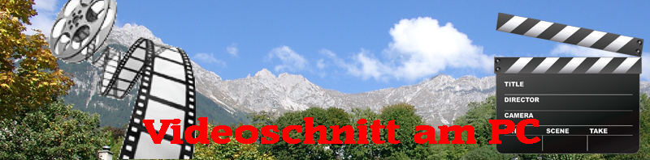

|

Sind Sie auch Hobbyfilmer? Videoschnitt als Hobby? So erreichen Sie mich!
Was wünschen Sie?
Reisedokumentationen, Urlaubsfilm, Familienfilm, Hochzeitsfilm, Hochzeitsvideo, Weddingfilm, Hochzeitsfotografie, Hochzeitsclips ...Erstellung Hochauflösende AVCHD
Videos für Full HD Fernseher, Präsentationsvideos, Flash-Videos für Homepage, Dia-Show auf
DVD / Blu-ray ?
Ich setze Ihre Vorstellungen & Ideen um und garantierte Ihnen eine professionelle
Erstellung Filmen auf höchstem Niveau.
Ich erstelle Ihnen einen Film die zu Ihrem Vorhaben passt und nicht nur ihre Bekannten
begeistern wird.
Sie brauchen dann nur einen Blu-ray oder DVD -Player und einen Fernseher.
Viele Videos wirken viel besser, wenn sie ordentlich geschnitten und nachvertont werden.
Wenn man genügend Material hat, kann man sehr schöne Werke erstellen. Manchmal ergibt eine
Stunde Rohmaterial nur 15 Minuten fertigen Film, aber der wird dann auch gern mal
angesehen.
Ist dann noch eine dem Thema entsprechende Musik untergelegt, begeistert man schnell die
Zuschauer.
Ein Videoschnitt ist kreative Arbeit. Oftmals formt sich bei der Arbeit der
Charakter des Films. Es ist aber wichtig, von Anfang an eine gewisse Vorstellung zu haben.
Dazu ist ein Vorgespräch nötig, und während des Entstehens ab und zu ein "Preview", also
eine Begutachtung des bisherigen Stands der Arbeiten.
Alles Weitere ist in einem kurzen Gespräch zu klären.
Was liefere ich Ihnen? Im Allgemeinen werde ich Ihnen eine oder mehrere DVDs liefern. Auch
für das Internet optimierte Videoströme kann ich in unterschiedlichen Formaten und
Qualitäten liefern. (MP4, MPEG-2, AVI, MKV, FLV)
Hinweis(Рекомендую) - Select video quality to 720p HD : Film - Video Clips - Выходной день в Альпах. Alpen Osterfelderkopf Garmisch Grainau Waxenstein Alpspitze.
Hinweis(Рекомендую) - Select video quality to 720p HD : Film - Video Clips - Walchensee & Kochel am See.
Hinweis(Рекомендую) - Select video quality to 720p HD : Film - Video Clips - Бавария Альпы отдых Bayern Alpen Freizeit.
Hinweis(Рекомендую) - Select video quality to 720p HD : Film - Video Clips - Выходной день в Альпах. Alpen Tirol Plansee Ettal Linderhof.
Hinweis(Рекомендую) - Select video quality to 720p HD : Film - Video Clips - Bayern - Alpen und Voralpenland Naturreiseziele Bayern.
Hinweis(Рекомендую) - Select video quality to 720p HD : Film - Video Clips - Spitzingsee - Schliersee (Bayern, Deutschland, Alpen).
Hinweis(Рекомендую) - Select video quality to 720p HD : Film - Video Clips - Schloss Neuschwanstein, Замок Нейшванштайн - Нойшванштайн.
Hinweis(Рекомендую) - Select video quality to 720p HD : Film - Video Clips - VADUZ - Вадуц - Liechtenstein - Лихтенштейн.
Hinweis(Рекомендую) - Select video quality to 720p HD : Film - Video Clips - Urlaub - Malbun - ski-resort village - Triesenberg, Liechtenstein.
Hinweis(Рекомендую) - Select video quality to 720p HD : Film - Video Clips - Marbella-Puerto Banus.
Stand: 2016 |